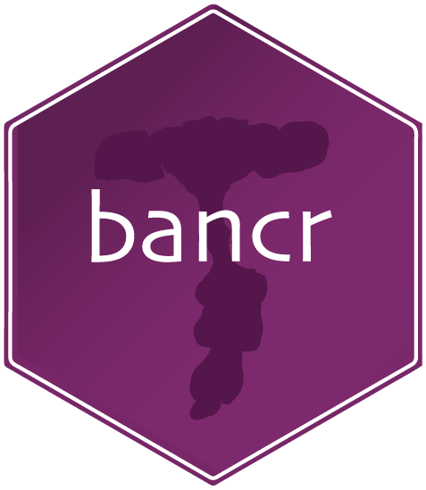

Build a Spelunker / ng.banc.community scene with a custom LM image layer
Source:R/banc-lm-scene.R
banc_lm_scene.RdConstruct a Neuroglancer JSON state that overlays a
light-microscopy precomputed image layer (e.g. the output of
neuronbridger::nrrd_to_precomputed applied to a registered
confocal stack) on top of a public BANC scene that already contains the
BANC EM image, segmentation proofreading, region outlines and JRC2018F
atlas layers, and either return a long fragment-encoded URL, or — if a
Spelunker / CAVE token is available — POST the state to the
nglstate/api/v1/post endpoint and return the shortened
...nglstate/api/v1/<id> URL.
Usage
banc_lm_scene(
lm_url,
layer_name = "LM data",
shader = NULL,
opacity = 0.6,
blend = c("additive", "default"),
ids = NULL,
base_url = paste0("https://spelunker.cave-explorer.org/#!middleauth+",
"https://global.daf-apis.com/nglstate/api/v1/", "6431332029693952"),
shorten = FALSE,
viewer = "banc.ng.community/view",
open = FALSE
)Arguments
- lm_url
URL of the precomputed LM layer (
gs://...,https://..., orfile:///...for local viewing).precomputed://is added automatically if missing.- layer_name
display name of the LM layer in Neuroglancer. Default
"LM data".- shader
optional Neuroglancer shader string. If
NULL(the default), a single-channel grayscale shader with a 4× contrast boost is used (Neuroglancer's UI lets viewers tune it further).- opacity
layer opacity in
[0, 1]; default0.6.- blend
layer blend mode (
"default","additive"). Default"additive"so the LM signal lights up where it overlaps the EM rather than occluding it.- ids
optional vector of BANC root IDs to add to the
"segmentation proofreading"layer that ships in the base state.- base_url
Spelunker base URL with a starting state to extend. Defaults to the public BANC scene used by
banc_scene. Pass an alternative scene URL to start from your own layered state.- shorten
logical; if
TRUE, POST the state to thenglstate/api/v1/postendpoint and return a shortened URL of the form<base>/#!middleauth+https://global.daf-apis.com/nglstate/api/v1/<id>. Requires a valid token frombanc_set_token.- viewer
one of
"banc.ng.community/view"(default; the public BANC viewer athttps://banc.ng.community/view/),"banc.ng.community"(the private CAVE-authenticated BANC viewer athttps://banc.ng.community/, used by the BANC team),"spelunker"(the upstreamhttps://spelunker.cave-explorer.org/viewer), or any other base URL string (must end with/). Only affects the prefix of the returned URL — the state JSON itself is identical and any Spelunker-compatible viewer can render it via#!middleauth+https://....- open
logical; if
TRUE, open the result in the system browser.
Value
A character of length 1: a long fragment URL by default, or a
shortened nglstate/api/v1/<id> URL when shorten = TRUE.
Details
The state is assembled by:
fetching the JSON for
base_url(so the result inherits all standard public layers — BANC EM, segmentation proofreading, region outlines, JRC2018F atlas, FAFB / hemibrain / MANC imported meshes, synapse cloud, nuclei);appending an
imagelayer pointing atlm_urlwith the suppliedshader,opacityandblend; andoptionally adding
idsas visible segments in the proofreading layer.
If the base-state fetch fails (e.g. no token / offline), a minimal stub state with just BANC EM + segmentation + LM is used instead.
The companion converter neuronbridger::nrrd_to_precomputed()
takes any 3-D .nrrd (or in-memory array) and writes the
Neuroglancer "precomputed" format that this layer URL expects. See
vignette("lm_layer_neuroglancer", package = "neuronbridger")
for the full IS2 → JRC2018F → BANC pipeline.
Bucket policy
Lee-lab maintains a curated mirror of registered LM volumes at
gs://lee-lab_brain-and-nerve-cord-fly-connectome/light_level/,
but that bucket is not public-write. To produce a sharable
URL of your own you'll need either (a) write access to that bucket
(ask the lee-lab folks), or (b) your own public-read GCS / S3 / static
HTTP host. Once the precomputed directory is reachable over HTTPS,
pass its URL as lm_url.
See also
banc_scene,
neuronbridger::nrrd_to_precomputed
Examples
if (FALSE) { # \dontrun{
# Convert + serve a registered LM volume:
neuronbridger::nrrd_to_precomputed(
"CapaR_in_BANC.nrrd",
output = "/tmp/CapaR_pc",
resolution = c(380, 380, 380)
)
system("gsutil -m cp -r /tmp/CapaR_pc gs://your-bucket/lm/CapaR/")
u <- banc_lm_scene(
"gs://your-bucket/lm/CapaR",
layer_name = "Kondo 2020 - CapaR",
viewer = "ng.banc.community",
shorten = TRUE,
open = TRUE
)
} # }